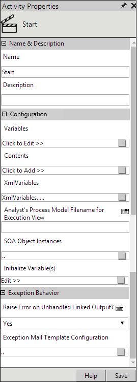

No
Activity Description:
The Start Activity is the first activity in a workflow. The icon corresponding to this activity is displayed by default in the Design Area. The Contents and Variables used in the execution of the workflow are declared here. The starting point for redirection can also be set in this activity. This will enable redirection at the beginning of the workflow until it is turned off later in the workflow.
Activity Properties:
The Start activity has to be configured by specifying appropriate values for the different properties in the Activity Properties area. The Activity Properties can be accessed by clicking the Activity Properties tool in the tool bar or by selecting the appropriate option from the right-click menu for the Start activity.

Note: Every time you input a value for a property, ensure to save the data. Click the Save button on the Activity Properties window. You need to save the property so that the subsequent properties in the activity can inherit the required information.
The Activity Properties are organized under the following groups of related properties. The properties under each group are described in this topic.
Name & Description
You can use these properties to specify the name and description of the activity.
Name - This property can be used to specify a name for the activity.
Property Type: Optional (This property needs to be set only if necessary.)
Description - This property specifies a brief description to be displayed for the activity.
Property Type: Optional (This property needs to be set only if necessary.)
Configuration
You can use these properties to specify the web service details.
Variables - The variables used in the workflow, including Local Variables, can be specified using this property.
Property Type: Optional (Set this property only if needed.)
Steps to set the variable property
Steps to set Variable for Queue Action user
See Start - Variables for a detailed description of the Variables property window.
Contents - The contents that can be passed to the workflow can be specified using this property.
Property Type: Optional (Set this property only if needed.)
Steps to set the contents property
See Start - Contents for a detailed description of the Contents property window.
XML Variables - The XML Variables used in the workflow can be specified using this property.
Property Type: Optional (Set this property only if necessary.)
Steps to set the XML Variables property
See XML Variables for a detailed description of the XML Variables window.
Analyst's Process Model Filename for Execution View - This property is used to specify the file name of the Process Model, which has been saved as the Business Analyst's view. This view will be displayed to the Analyst as the Process Execution view. You can specify this property by entering the file name in the text box for the property or by building an expression for the file name using the Expression Editor, which you can open by clicking the Expression Editor icon next to the property name.
Property Type: Optional (Set this property only if necessary.)
SOA Object Instances - This property is used to create multiple instances of a class. Without instantiating a class, you cannot consume the methods available in a class. The Static member of the class can be consumed without creating any instance.
Property Type: Optional (Set this property only if necessary.)
See SOA Object Instances in SOA Property topic in Developer Guide for more information.
Exception Behavior
You can use these properties to raise exceptions if the output is not linked to the next activity in the workflow and also define and configure email templates and users for the exception mails.
Raise Error on Unhandled Linked Output? – This property can be configured to raise an error if the output is not linked to the next activity in the workflow.
Property type: Optional (This property needs to be set only if necessary)
The Configurable values for this property are Default [Backward Compatible],Yes and No. If the value is set as Default [Backward Compatible], then the workflow will behave as per the existing behavior.
Scenario
Telematics Organization maintains different workflows like Invoice Workflow and Leave Workflow under the Telematics repository for their HR and Accounts Payable Processes. John has designed a workflow using the Human Activities and has assigned the human activities to the actors. When the activities are getting executed, if a particular actor is not found, then the Workflow Engine will give the output as 'Not Enough Resources to Acknowledge'. If this output is not linked to the next activity, then the workflow will finish successfully. However, if 'Yes' is selected for the Raise Error on Unhandled Linked Output property, the workflow will raise errors at finish.
Steps to set the Raise Error on unhandled linked output
Each activity has the Raise Error on Unhandled Linked Output property. If you click on it, all the default configured mapped error outputs in red with the respective check boxes selected will be displayed.
Mapped Error Outputs
The Mapped Error Outputs list contains the error outputs (shown in red) that cause the workflow to complete abruptly. This can happen if the error outputs are not linked to the next activity in the workflow. To change the mapped error outputs, check or uncheck the relevant options and click Ok.
Workflow Behavior for Error Outputs
If the error outputs are not linked to the next activity in the workflow, and if the 'Stop with Error' option is selected, the workflow will complete with errors. Similarly, if the 'Exit Activity with Error Output' option is selected, the workflow will not finish with errors but will give an Error Encountered output.
Note: The changes made to this property will take effect only if you set the value for Raise Error on Unhandled Linked Output to Yes in the Start Activity.
Exception Mail Template Configuration – This property can be used to define and configure Email Templates and Users for the exception mails, whenever an exception occurs in workflow execution.
Property type: Optional (This property needs to be set only if necessary)
The Exception Mail Template and Users at the repository level are configured from the Central Configuration site section. For more information, refer to Configuring Exception Mail Template under the Administration Tasks in the Administrator's Guide.
Property type: Optional (This property needs to be set only if necessary)
You can configure Exception Email Templates for two groups - Group A and Group B, both at the workflow level.
It is not mandatory to set both Users Groups A and B.
For example Administrator type of users can be configured under Group A and Normal type of users can be configured under Group B.
Email Templates can be configured through two modes – one is by selecting an existing predefined Default or Sample template, and the other is by using an editor.
Based on the Exception Mail Configuration, the members of each group will receive mails.
The Template file has to be placed in the folder 'Exception Template' under the 'Workflow elements' folder. In the Template file, we can place the Variables, Contents and XMLVariables Placeholders in the html file.
Scenario
John has designed a workflow using Human Activities and he has assigned these activities to the actors. When the activities are getting executed, if a particular actor is not found, then the Workflow Engine will give the output as 'Not Enough Resources to Acknowledge'. If this output is not linked to the next activity, the workflow will finish successfully. However, if the Raise Error on Unhandled Linked Output property is selected as 'Yes', then the workflow will raise errors at finish.
There should be a notification to the users about the Exception occurred in an activity. These users should be configurable and the template for the exception mails should be configurable.
Steps to configure the Exception Mail Template
Users can be configured through the User Lookup screen or the Role Lookup screen. By default, the User is selected.
The user's name (either User or Role) will now appear in the Exception Mail Group A field.
You can select either a Default template or a Sample template.
To create your own template for the exception mail
Note: You must use only the actor variable, and not any of its sub properties, to initialize a variable of type actor.